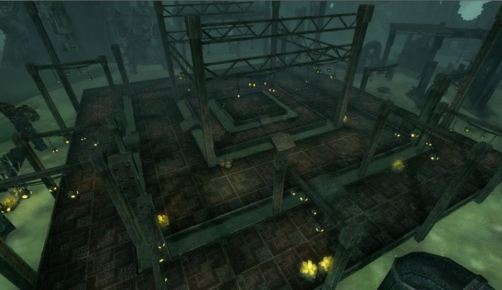
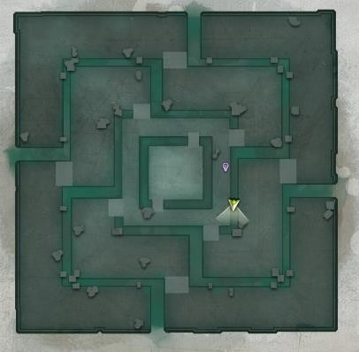
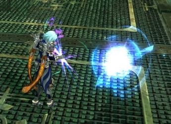
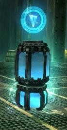
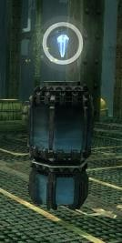
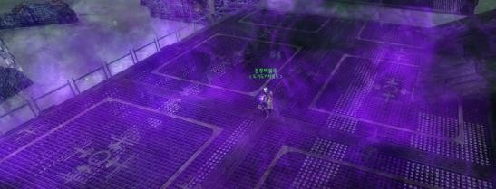
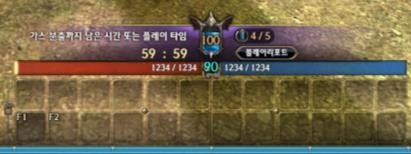
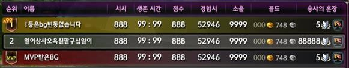

스킬 이름 · 효과보다 반복으로 손에 익는 전투 리듬에 설계 초점
지속딜 클래스는 운영이 안정적인 대신, 긴장감도 함께 사라짐
DOT 딜러의 정체성을 지키면서, 손맛이 뒤바뀌는 구간을 추가
플레이의 변주는 우연이 아닌, 스킬 구조의 유기적 맞물림으로 발생하도록 정밀 설계
스킬의 타입 · 효과 · 쿨타임 · 지속시간을 모두 고려한 사이클 설계
플레이어가 폭발 타이밍을 예측하고 조절. 확실한 보상감 제공
같은 트리 안에서도 극단적으로 달라지는 손맛. 타격감 극대화
팀 없는 개인전. 오염된 공기가 차오르는 폐쇄 공간에서 다른 캐릭터를 처치해 신선한 공기를 확보하는 구조. 전장 규칙 · 재화 · 어뷰징 방지 · UI 요구사항 기획서 작성

신선한 공기는 환경 피해만 막는 보호막. 다른 캐릭터의 공격은 막지 못하며, 소진 시 최대 생명력 비례 피해 적용
처치 보상은 누적하되 최대 중첩과 삭제 조건으로 격차 확대 제한. 보급품 리액터에는 약육강식 미적용, 처치와 채집의 보상 구분. 소모 속도는 실제 수치 대신 오염된 공기 기준 배수로 표기
3 · 5 · 7분마다 하층부터 층 전체가 맹독 안개로 전환. 상층일수록 면적과 리액터 수가 적어 생존 공간과 재화 공급이 함께 감소
전환 10초 전 시스템 메시지 · 사운드 경고. 상층 이동은 계단으로만 가능하고 하층 이동은 어디서나 가능해, 계단 주변으로 교전 집중





| 악용 사례 | 방지 규칙 | 목적 |
|---|---|---|
| 부활 지연 | 사망 5초 후 자동 부활. 지연 시 축복 효과 삭제 · 공헌도 패널티 · 보상 미지급 | 유령 상태를 이용한 목숨 소모 없는 회피 방지 |
| 부활 직후 기습 | 부활 후 5초 면역. 스킬 사용 · 리액터 조작 시 즉시 해제 | 면역 효과를 재정비 용도로 한정 |
| 방치 · 잠수 | 2분간 공격 · 적 대상 스킬 · 리액터 조작이 없으면 경고, 3회 누적 시 AFK 판정 | 세 행동 중 하나라도 있으면 참여로 인정 |
| 이탈 후 재입장 | 이탈 30초당 목숨 1개 차감. 순위 계산에서 이탈 시간 제외 | 접속 종료를 이용한 위험 구간 회피 방지 |
| 파티 담합 | 입장 시 파티 자동 해산, 종료 후 재결성. 대상 레벨 · 이름 비공개. 채팅은 유령 상태에서만 허용 | 아군 식별 수단 제거 |
| 리액터 독점 | 조작 3초, 피격으로는 취소 불가. 넉백 · 스턴 등 군중제어로만 방해 가능 | 군중제어 스킬의 전장 활용 가치 부여 |
| 회복 아이템 사용 | 물약 · 붕대 등 회복 아이템 사용 불가. 제자리 부활 불가 | 생존 수단을 신선한 공기로 일원화 |

